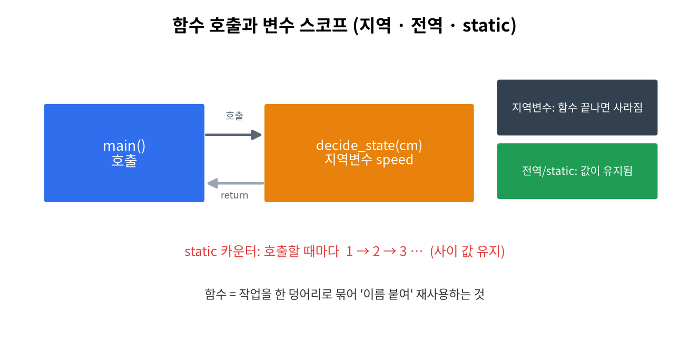
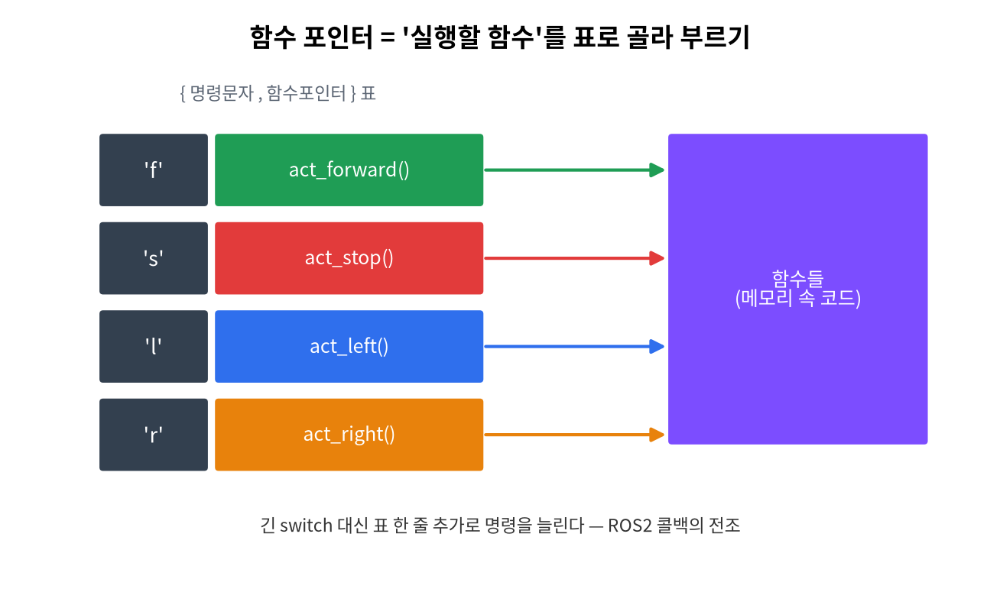

7주차 · 함수 + 시리얼 명령 제어 (중간 정리)¶
C언어 · 미래모빌리티학과 | CLO1·CLO3 | 교재 Ch08


학습 목표¶
- 함수 정의/선언/호출, 매개변수·반환값을 이해하고 코드를 모듈화한다.
- 시리얼 명령(문자) → 동작 디스패치를 구현한다(함수 포인터 맛보기).
강의 해설¶
7주차는 코드를 길게 쓰는 단계에서 벗어나, 의미 있는 단위로 나누는 방법을 배운다. 지금까지는 main 안에 모든 코드를 넣어도 예제가 동작했지만, 프로그램이 조금만 커져도 그런 방식은 읽기 어렵고 고치기도 어렵다. 함수는 "이 코드 묶음이 어떤 일을 하는지" 이름을 붙이는 방법이며, 좋은 함수 이름은 주석보다 더 강력한 설명이 된다.
매개변수와 반환값은 함수와 함수 사이의 약속이다. decide_state(distance)처럼 입력을 주면 상태를 돌려주는 함수는 테스트하기 쉽다. 반대로 전역변수에 몰래 의존하는 함수는 작은 예제에서는 편하지만 큰 프로그램에서는 원인을 찾기 어렵게 만든다. 이 주차에서는 함수가 잘 나뉜 코드와 모든 것이 한곳에 섞인 코드를 비교해 읽기 차이를 느끼게 하는 것이 좋다.
시리얼 명령 제어는 함수의 필요성을 보여 주는 좋은 사례다. 명령 문자를 읽고, 그 문자에 맞는 함수를 호출하고, 각 함수는 자기 역할만 수행한다. 이 구조는 후반부 ROS2 콜백과 직접 연결된다. ROS2에서도 메시지가 들어오면 콜백 함수가 실행되고, 그 안에서 제어 함수를 호출한다. 따라서 7주차는 중간고사 전 문법 정리이면서, 동시에 로봇 소프트웨어 구조의 첫 맛보기다.
3시간 강의 운영 포인트¶
- 0~25분: 지금까지
main에 쌓인 코드를 보여 주고, 함수가 필요한 이유를 "읽기, 테스트, 재사용" 관점에서 설명한다. - 25~85분: 함수 정의, 선언, 호출, 매개변수, 반환값을 작은 계산 함수로 반복한다. 함수 호출 시 값이 복사된다는 점을 변수 그림으로 보여 준다.
- 85~140분: 거리 판단, LED 제어, 명령 처리 코드를 함수로 분리한다. 학생에게 "이 함수의 책임은 무엇인가"를 이름으로 표현하게 한다.
- 140~180분: 시리얼 명령 디스패치 실습과 1~7주 종합 복습을 연결한다. 중간고사 전에는 함수 호출 흐름을 손으로 따라가는 연습을 반드시 남긴다.
1. 이론¶
1.1 함수의 구조¶
double get_speed(double dist, double t) { // 정의
return dist / t;
}
double v = get_speed(150, 12); // 호출
1.2 왜 함수로 나누나¶
- 중복 제거·재사용·가독성·테스트 용이. SW공학의 출발점.
- 큰 문제를 작은 함수로 쪼개는 것 = 분할 정복.
1.3 함수 선언(프로토타입)¶
main 위에서 함수를 미리 알리는 선언. 큰 프로그램·여러 파일에서 필요.
1.4 값 전달(call by value)¶
C는 인자를 복사해서 넘긴다. 함수 안에서 매개변수를 바꿔도 원본은 안 바뀐다(원본을 바꾸려면 12~13주 포인터).
1.5 명령 → 동작 디스패치¶
void run_command(char cmd) {
switch (cmd) {
case 'h': faceHappy(); break;
case 'a': faceAngry(); break;
default: faceNeutral();
}
}
이 "명령을 받아 해당 함수를 부르는" 구조가 ROS2 콜백의 전조다.
2. 핵심 용어 정리¶
| 용어 | 설명 |
|---|---|
| 함수 | 이름 붙은 코드 블록 |
| 매개변수/인자 | 함수가 받는 입력(정의 측/호출 측) |
| 반환값 | 함수가 돌려주는 결과(return) |
| 프로토타입 | 함수의 미리 선언 |
| call by value | 인자를 복사해 전달(원본 불변) |
| 모듈화 | 기능을 함수 단위로 분리 |
3. 실습¶
실습 7-1 · 제어 함수 분리 (예제 ex07_functions.c)¶
주행 로직을 stop(), go_forward(), decide_state() 등으로 나누고,
지역/전역/static 변수의 수명 차이를 출력으로 확인.
실습 7-2 · 명령 디스패치 (예제 ex09_dispatch.c)¶
명령 문자 → 실행 함수를 함수 포인터 표로 연결(길어지는 switch 대체).
실습 7-3 · 시리얼 명령 제어 (아두이노)¶
시리얼로 h/w/a/o/n을 입력받아 표정 전환(code/arduino/09_face_main).
예제: code/arduino/09_face_main/09_face_main.ino
| 입력 문자 | 호출되는 함수 | 결과 |
|---|---|---|
h |
faceHappy() |
웃는 표정 |
a |
faceAngry() |
경고 표정 |
o |
faceSurprised() |
놀란 표정 |
n |
faceNeutral() |
중립 표정 |
b |
faceBlink() |
눈 감기 |
ROS2 콜백과의 연결
지금은 시리얼 모니터에서 h를 입력하면 faceHappy()를 호출한다. ROS2에서는 /cmd_vel이나 /robot_state 토픽 메시지가 들어오면 콜백 함수가 호출된다. 즉, 명령 → 함수 호출이라는 구조는 같다.
실습 7-4 · 중간 정리¶
1~7주 핵심(출력·입력·자료형·연산·조건·반복·함수) 복습, 중간고사 범위 확인.
4. 과제¶
- 제어 로직 3개 이상 함수 분리, 시리얼 명령 제어.
- 도전:
runCommand()에r명령을 추가하고, 빠르게 두 번 깜박이는 함수를 새로 만들어 연결하라.
5. 참조¶
- 교재 Ch08 · 자료
code/arduino/09_face_main
형성평가 체크포인트¶
- 함수 분할 기준 설명 · [ ] 매개변수/반환 정확 · [ ] call by value 이해 · [ ] 명령→동작 동작
연습문제¶
void f(int x){ x = 10; }를int a=1; f(a);로 호출한 뒤a의 값은?- 반환형이
void인 함수는return을 어떻게 쓰는가? - 함수 프로토타입(선언)을 두는 목적은?
정답 및 해설
1— C는 값 전달(call by value): 복사본만 바뀌고 원본은 불변.- 값 없이
return;또는 생략. main보다 아래에 정의된 함수를 미리 알려 호출 가능하게(타입 검사).
🖼 그림으로 복습 — 함수 호출과 변수 스코프